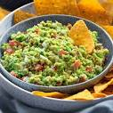

Guacamole

Descriptions
Fresh avocado mixed with lime, tomatoes, cilantro and onions
Ingredients
- 2 avocados, peeled and pitted.
- 1 cup chopped tomatoes.
- ¼ cup chopped onion.
- 2 tablespoons lemon juice.
- salt and ground black pepper to taste.
- Jalapeño
Steps
- Get all ingredients together
- Slice the avocados in half, take out the pit, and use the fork to scrape all the flesh into the bowl.
- Squeeze a half a lime or lemon over the avocados.
- Mince your garlic and dump it into the bowl.
- Cut your tomato in half, and scoop out all the watery bits and seeds.
- Cut in half, remove seeds/membrane if you want (I'd recommend leaving at least half of the jalapeno intact) and cut it into a small dice.
- Dice up 1/4 of your red onion finely and drop that in.
- Take your fork and mash mash mash, making sure everything gets well combined.
- Add in some pepper and good pinches of salt and chili powder, and mix and taste.